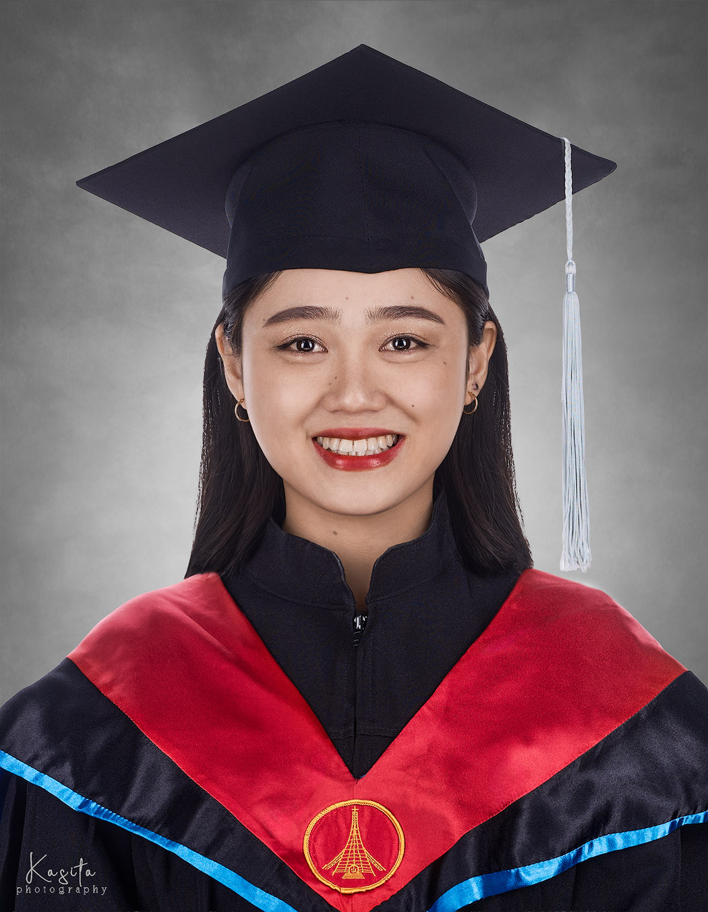

I am Jessiel May Nicolas Caranto, a Global MBA graduate and experienced educator. I specialize in lesson planning, creating engaging learning materials, and inspiring students to achieve their best. This site showcases my teaching background, skills, and professional journey.
Education
- Global Master of Business Administration (GMBA) - Tunghai University, Taiwan
- Bachelor of Science in Business Administration (BSBA) - Pangasinan State University,Philippines
- Teaching English to Speakers of Other Languages(TESOL) Certification - English Teaching Qualification
- Professional Level Passer of Civil Service Examination (CSE-PPT) - Philippines
Skills
- Lesson Planning and Classroom Management
- English, Filipino Communication
- Curriculum Design for Elementary Learners
Gallery


Contact Me
Email: jessielmay122001@gmail.com
LinkedIn: Jessiel May Nicolas Caranto